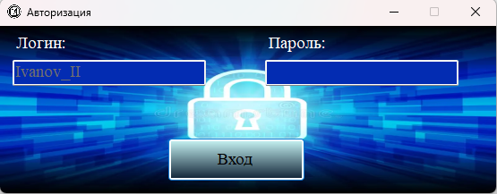
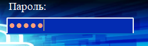
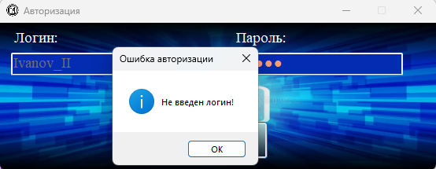
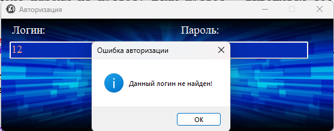
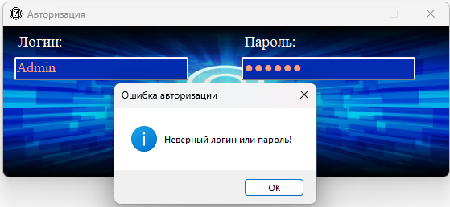

При запуске приложения первым открывается окно авторизации. Оно предназначено для проверки прав пользователя и предотвращения несанкционированного доступа к архивным данным.

Рис. 1. Окно авторизации с полями ввода логина и пароля
Поля окна авторизации:
Поле «Логин» — предназначено для ввода имени пользователя. Логин чувствителен к регистру.
Поле «Пароль» — предназначено для ввода пароля. По умолчанию символы скрываются (отображаются в виде точек или звёздочек).

Рис. 2. Поле пароля с маской скрытия ввода
Кнопка «Вход» — после ввода логина и пароля нажмите эту кнопку для выполнения входа.
Процесс авторизации
При нажатии кнопки «Вход» программа выполняет следующие действия:
1. Проверяет, что поле логина не пустое. Если пустое — выводится сообщение: «Не введен логин!».
2. Проверяет, что поле пароля не пустое. Если пустое — выводится сообщение: «Не введен пароль!».

Рис. 3. Сообщение об ошибке при пустом поле логина
3. Ищет введённый логин в таблице пользователей базы данных.
4. Если логин не найден — выводится сообщение: «Данный логин не найден!».

Рис. 4. Сообщение об ошибке при ненайденном логине
5. Хэширует введённый пароль с помощью алгоритма SHA-512.
6. Сравнивает полученный хэш с хэшем пароля, хранящимся в базе данных.
7. Если пароли не совпадают — выводится сообщение: «Неверный логин или пароль!».

Рис. 5. Сообщение об ошибке при неверном пароле
8. При успешной проверке окно авторизации закрывается, и открывается главное окно программы.
Учётная запись по умолчанию
При первом запуске (или после создания новой базы данных) в системе уже существует администратор:
— Логин: Admin
— Пароль: Admin
Примечание: Для безопасности рекомендуется сменить пароль администратора после первого входа через раздел «Пользователи».